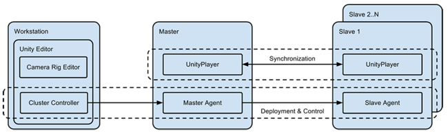

Unity uses clusters for complex Multi-Screen setups. These would typically be 3–6 screens but could up up to 50 screens, such as:
Multiple instances of slave UnityPlayers render in sync onto multiple displays (one instance to one display) to form a unified image. The slaves are synchronized (frame locked to) a single master UnityPlayer. The slaves are connected to the master via LAN network.

This is the computer used by the developer to edit the scene. This could be a personal laptop that’s not part of the rig. It runs the Unity Editor and controls the cluster (update game data, start, stop).
This is the master node in the rig. It runs the Master UnityPlayer and it is connected to all the Slave UnityPlayers. It publishes its internal states to all the slaves and all the slaves are frame locked to this instance. It does not render to the display matrix; instead it renders to a control screen and it can potentially have extra information and features (observer mode etc). All input is received and processed by the master.
Each of the slave nodes runs the Slave UnityPlayer and renders to one of the displays in the matrix.
This is tool that is available in the Editor to setup and configure all the cameras used in the rig and it provides a preview of what all the cameras will see. The setup is saved and is reusable in other scenes. It allows the creation of various topologies:
The Cluster Controller can be a tool within Unity Editor or standalone software. It issues commands such as: start, stop, restart, update the cluster. It controls the slaves (enable/disable, assign camera id) and specifies other parameters such as location of data.
The Master Agent accepts commands from the Cluster Controller. It forward commands to all slaves and updates the slaves with the latest data.
The Slave Agent waits for commands from the Master Agent and updates, starts and restarts the local UnityPlayer.